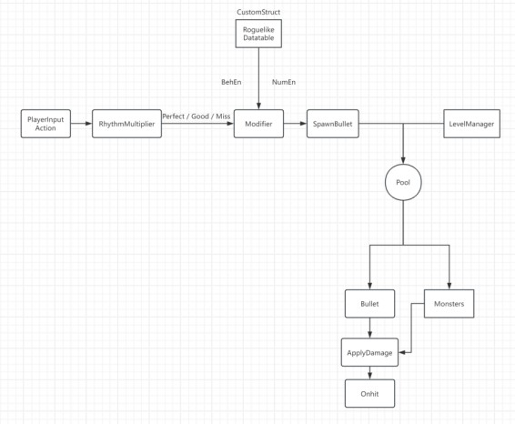

项目信息
时间：2025年10月 - 2025年11月
项目说明：本游戏属“节奏动作（Rhythm-Action）”类型，采用3D俯视视角的实时战斗系统。核心玩法将音乐节奏同步机制与动作战斗系统融合，辅以 Roguelike 式关卡生成与角色构筑机制，旨在创造兼具听觉节奏反馈与操作策略深度的游戏体验。
Featured Project
采用3D俯视视角的实时战斗系统。核心玩法将音乐节奏同步机制与动作战斗系统融合。
若出现黑屏但有声音，通常是视频编码兼容问题。可先 下载原视频。
时间：2025年10月 - 2025年11月
项目说明：本游戏属“节奏动作（Rhythm-Action）”类型，采用3D俯视视角的实时战斗系统。核心玩法将音乐节奏同步机制与动作战斗系统融合，辅以 Roguelike 式关卡生成与角色构筑机制，旨在创造兼具听觉节奏反馈与操作策略深度的游戏体验。
本作以“节奏即力量”为核心理念，将音乐律动与实时动作战斗深度融合。玩家在激昂的节拍中通过精准的攻击与闪避来建立节奏连击，节奏表现直接影响战斗强度与游戏节奏的流动性。
